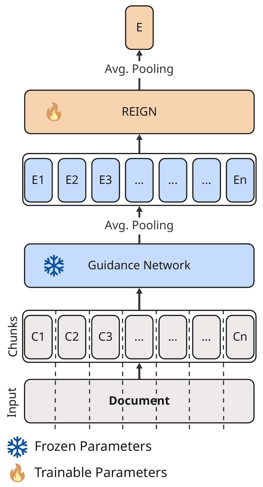
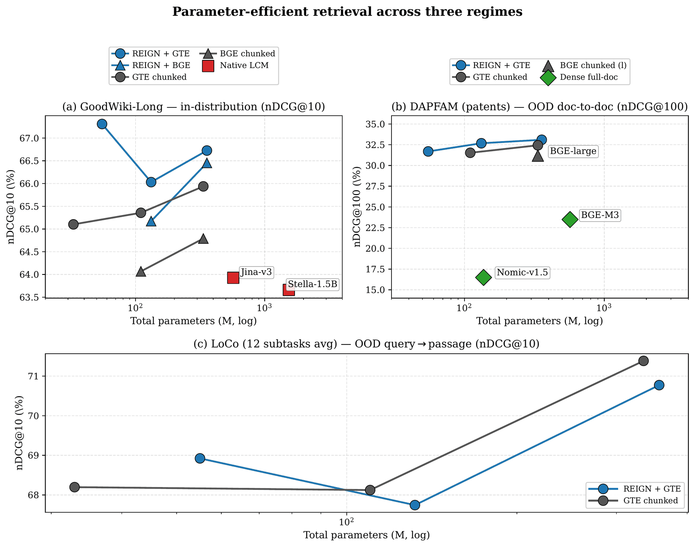

1 Middle East Technical University (METU) 2 OBSS AI
Findings of the Association for Computational Linguistics: EMNLP 2026
Dense retrieval over long documents is expensive: token-level encoders scale quadratically in sequence length and most long-context embedding models reach 32K tokens only through architectural workarounds or by stretching billion-parameter LLMs. We propose REIGN (Refurbished Embeddings with Integrated Guidance Networks), a contrastively trained bi-encoder that operates on sequences of contextualised chunk embeddings from a frozen Guidance Network (GN) rather than on raw tokens. REIGN targets multi-chunk inputs and primarily document-to-document retrieval; single-chunk inputs are served by the GN alone. Decoupling token-level processing from document-level reasoning, and caching the GN embeddings to disk, cuts per-document training cost by roughly four orders of magnitude relative to chunked Transformer fine-tuning. We also release a synthetic long-document retrieval benchmark for contrastive training and evaluation at long context lengths. Across an in-distribution Wikipedia benchmark, the LoCo out-of-distribution suite, and a real-world patent retrieval case study, REIGN matches dense long-context retrievers at smaller parameter budgets per regime: statistically indistinguishable from models 1.6–4.3× larger on the patent task, and within 0.65 nDCG@10 of a 20×-larger model on LoCo.

On the DAPFAM patent task, REIGN + GTE-large (357M total) is statistically indistinguishable from dense baselines 1.6–4.3× larger, under paired significance tests on per-query nDCG@100.
With cached GN chunk embeddings, REIGN answers queries 49–229× faster than re-running the GN per query, and stays at parity when uncached. Peak GPU memory is 0.24–1.73 GB, versus 4.8–18.9 GB for the native long-context dense baselines (Jina-v3 measured at batch 4).
On the out-of-distribution LoCo suite, REIGN + GTE-large is within 0.65 nDCG@10 of a 20×-larger model.

We release GoodWiki-Long-Synthetic, a synthetic long-document retrieval dataset built from GoodWiki, a cleaned markdown release of Wikipedia. Long articles are rephrased with an LLM, so each article and its rephrasal form an aligned positive pair; topical distractors are injected as partial matches. The result is graded relevance over documents that average 5,065 words. The dataset uses the standard BEIR/MTEB tri-config layout and works with existing retrieval evaluation pipelines: huggingface.co/datasets/devrim/goodwiki_long_synthetic_ir.
@inproceedings{cavusoglu2026reign,
title = {{REIGN}: Refurbished Embeddings with Integrated Guidance Networks for Efficient Context-Length Scaling},
author = {{\c{C}}avu{\c{s}}o{\u{g}}lu, Devrim and Akba{\c{s}}, Emre},
booktitle = {Findings of the Association for Computational Linguistics: {EMNLP} 2026},
year = {2026},
publisher = {Association for Computational Linguistics},
note = {To appear}
}